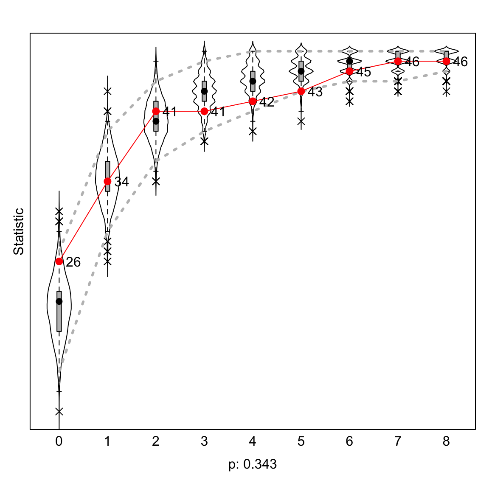
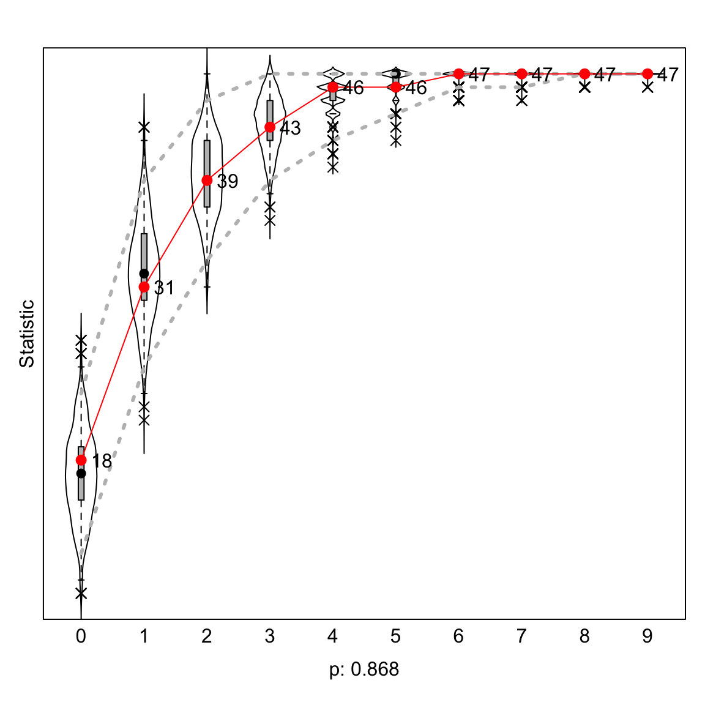
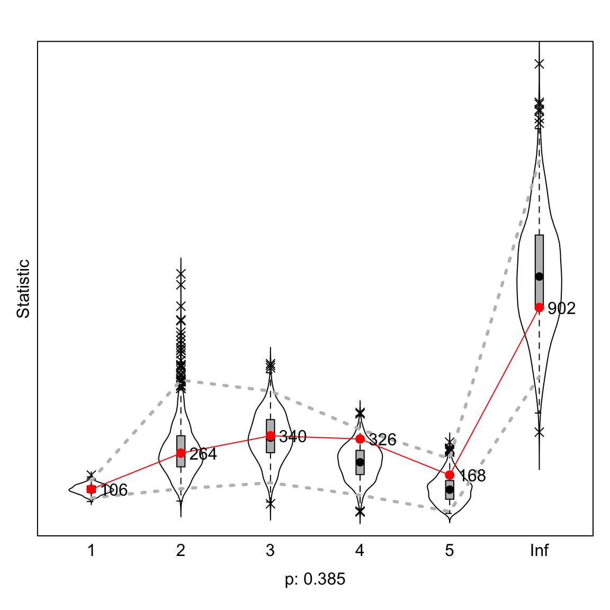
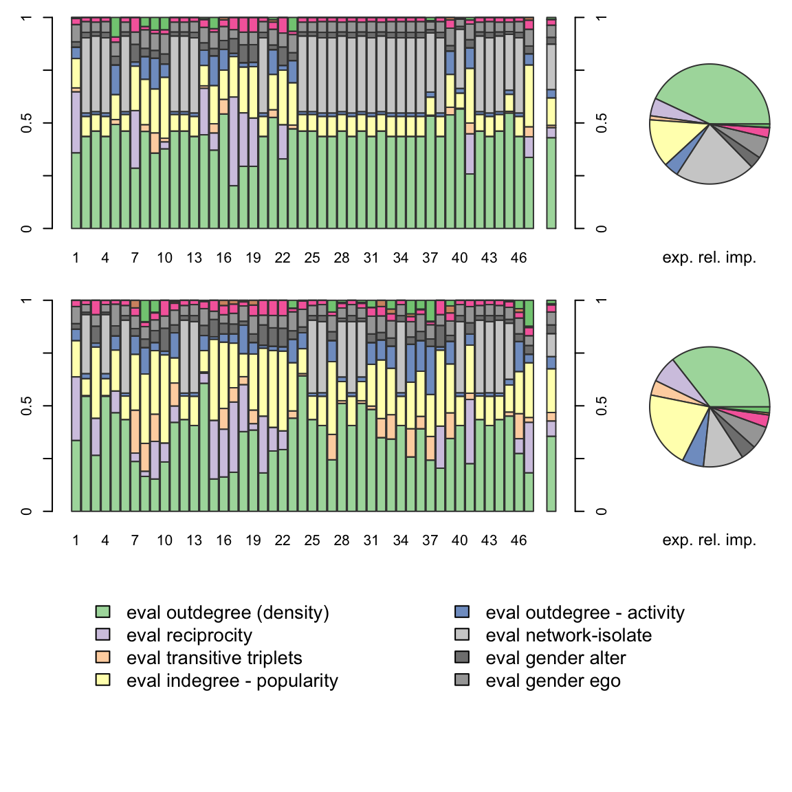

Defining dependent and independent variables
Dependent variable
[1] 2The wave1 and wave2 objects are created to
store the adjacency matrices for the two time periods/waves from the
df_network list. This makes it easier to refer to each
matrix separately in subsequent steps.
# Wave 1 adjacency matrix
wave1 <- df_network[[1]]
# Wave 2 adjacency matrix
wave2 <- df_network[[2]]The diagonals of the adjacency matrices are set to 0 to remove self-ties along the diagonal, since often in network analysis we are interested in modeling connections between distinct nodes. Removing self-connections simplifies this interpretation.
# Sets diagonal of wave1 matrix to 0
diag(wave1) <- 0
# Sets diagonal of wave2 matrix to 0
diag(wave2) <- 0The weighted adjacency matrices are binarized to convert any ties greater than 1 to simple binary 0/1 values. This makes the network connections straightforward and unweighted edges suitable for modeling purposes.
# Binarizes wave1 matrix values to 0/1
wave1[wave1 > 1] <- 1
# Binarizes wave2 matrix values to 0/1
wave2[wave2 > 1] <- 1The binarized adjacency matrices are combined into an array to represent the two network observations over time. This stacks the matrices into the format required for the dependent variable.
# Creates array containing wave1 and wave2 matrices
net_soc_array <- array(data = c(wave1, wave2), dim = c(dim(wave1), 2))The array is converted to a sienaDependent object to
specify the dependent network variable for the estimation. This
encapsulates the array with metadata for use in RSiena model
functions.
Some examples explain the reasoning behind these steps.
[1] 0 1 0 1 1 0 0 1 1 1 0 0 1 0 1 0 0 0 0 1 0 0 1 0 0 1 1 0 1 0 1 0 1 1 1 1 1 1
[39] 0 1 1 0 1 0 0 1 0The gender vector is extracted from the df_soc data
frame, containing 0/1 indicators of whether each actor is female. This
created raw data for the sex covariate.
[1] 0 1 0 1 1 0 0 1 1 1 0 0 1 0 1 0 0 0 0 1 0 0 1 0 0 1 1 0 1 0 1 0 1 1 1 1 1 1
[39] 0 1 1 0 1 0 0 1 0
attr(,"class")
[1] "coCovar"
attr(,"centered")
[1] TRUE
attr(,"nodeSet")
[1] "Actors"The gender vector is converted into a covariate object using the
coCovar function. This wraps the vector with additional
attributes, such as the nodeset (“Actors”), to define it as a covariate
for the model estimation.
RSiena
The sienaDataCreate function is used to bundle the
dependent network variable (net) and gender covariate into
a single siena data object (mydata). This combines all data
required for model estimation into a specialized structure.
# Creates a Siena data object containing the networks and covariate
(mydata <- RSiena::sienaDataCreate(net, gender))Dependent variables: net
Number of observations: 2
Nodeset Actors
Number of nodes 47
Dependent variable net
Type oneMode
Observations 2
Nodeset Actors
Densities 0.016 0.027
Constant covariates: gender The new Siena data object called mydata contains the
longitudinal co-authorship network across 2 timepoints (net) and the
gender covariate for 47 faculty nodes. The sienaDataCreate function
formats the raw network and attribute data into the required structure
for Siena modeling. The output confirms mydata has 2 network
observations, net is a one-mode faculty co-authorship network, and
gender is a constant covariate. In summary, this pre-processes the
collaboration data into the necessary Siena format, compiling the
temporal network and attributes, to enable statistically modeling the
dynamics of this faculty network.
RSiena Effects
The getEffects function generates default starting
values for all possible effects included in the networks and covariates
in the metadata. This provides the initial values required for the model
specification and estimation.
effectName include fix test initialValue parm
1 basic rate parameter net TRUE FALSE FALSE 2.69875 0
2 outdegree (density) TRUE FALSE FALSE -1.64518 0
3 reciprocity TRUE FALSE FALSE 0.00000 0 The output from the getEffects function provides initial
parameter values for modeling network dynamics using the Simulation
Investigation for Empirical Network Analysis (SIENA) approach (Snijders,
van de Bunt, & Steglich, 2010). Specifically, it shows starting
values for three effects that are commonly included in SIENA models: the
basic rate parameter, outdegree (density), and reciprocity.
The basic rate parameter determines the baseline tendency for changes in network ties over time. The initial value of \(2.69875\) represents the starting assumption that ties have a moderate tendency to change. Outdegree, which captures density trends, has an initial value of \(-1.64518\). This negative parameter indicates an initial assumption of decreasing network density over time. The starting value for reciprocity is 0, reflecting no initial assumption regarding mutuality of ties.
For each effect, the output provides columns indicating whether to
include the effect, fix its value, and test for significance. The
initialValue column shows the starting value for each
effect, while the parm column gives the number of
parameters associated with it.
Isolate effect (isolateNet)
The isolateNet effect is highly relevant for
investigating potential gender inequalities within the co-authorship
network of faculty at Major University. A fundamental goal of this study
is to assess whether women experience constraints in accessing
strategically advantageous positions that allow productive engagement in
a collaborative ecosystem, which is vital for success and advancement in
contemporary academia. Being disconnected and marginalized with no
collaborators would constitute an extreme form of exclusion from this
collaborative fabric.
The isolateNet effect, denoted \(s_{i56}^{\text{net}}(x, z)\), provides a direct way to quantify the prevalence of such isolation. This is mathematically defined as follows.
\[s_{i56}^{\text{net}}(x, z) = I\left\{x_{+i}=x_{i+}=0\right\}\]
Where:
\(x_{+i}\) represents the in-degree of actor \(i\), defined as the number of incoming ties to actor \(i\)
\(x_{i+}\) represents the out-degree of actor \(i\), defined as the number of outgoing ties from actor \(i\)
\(I\left\{\right\}\) is an indicator function equaling 1 if the condition inside the brackets is satisfied, and 0 otherwise
This counts actor \(i\) as an isolate (contribution of 1) if both in-degree \(x_{+i}\) and out-degree \(x_{i+}\) are equal to zero, meaning that the actor has no incoming or outgoing collaborative ties.
A significant and positive parameter for isolateNet
according to gender indicates that the faculty of that gender has a
higher tendency to be disconnected in the network. Given the extensive
prior work suggesting that female faculty face constraints on access to
collaborations, a key hypothesis of this study is that the
isolateNet effect will be significant and positive for
women but not for men.
Such a finding would provide compelling quantitative evidence that
women are more likely to be marginalized within the departmental
co-authorship ecosystem. This exclusion from connectivity, which is
increasingly vital for impact and advancement, represents a fundamental
inequality that must be addressed. The isolateNet effect
operationalizes this isolated position in a way that powerfully speaks
to broader issues of inequality within the shifting collaborative
landscape of academia.
In-degree popularity effect (inPop)
The in-degree popularity effect is highly relevant for investigating potential gender asymmetries in the studied faculty co-authorship network. A core interest is to assess whether women scholars face constraints in accessing advantaged network positions that contribute to cumulative advantage processes. The in-degree popularity effect precisely quantifies the tendency for preferential attachment based on current popularity (operationalized as in-degree), which is a pivotal generative network mechanism that can concentrate links among already well-connected nodes over time.
Mathematically, this effect is defined as follows.
\[s_{i24}^{\text{net}}(x) = \sum_{j \in N(i)} x_{+j}\]
Where:
- \(N(i)\) is the set of nodes \(j\) such that actor \(i\) has an outgoing tie to \(j\), i.e. where \(x_{ij} = 1\)
- \(x_{+j} = \sum_{h \in A} x_{hj}\) is the in-degree of node \(j\), counting \(j\)’s number of incoming ties from all nodes \(h\) in the set of actors \(A\)
- Therefore, \(\sum_{j \in N(i)} x_{+j}\) sums the in-degrees of all nodes \(j\) that ego \(i\) has collaborations with
This counts the total number of incoming ties received by all of actor \(i\)’s collaborators. This effect estimates the tendency of actors with already high degrees to attract more ties over time.
A positive coefficient for the in-degree popularity effect signifies preferential attachment dynamics. Comparing the effect between female and male faculty members, while controlling for other factors, will indicate whether there are gender differences in the extent to which female versus male scholars can leverage their popularity to attract additional collaborations over time.
Significantly lower preferential attachment for women suggests subtle constraints that hamper their connectivity to high-status collaborators, with implications for cumulative advantage processes that may further concentrate on opportunities among well-connected men.
Out-degree activity effect (outAct)
The outAct effect is highly relevant for this study’s
goal of assessing gender differences in co-authorship networks within
academia.
Specifically, the outAct effect represents a tendency
for highly active scholars with many outgoing collaboration ties to gain
even more ties over time. This could exacerbate gender imbalances if
male faculty members had higher initial out-degrees.
Mathematically, the outAct effect is defined as
\[s_{i,\text{outAct}}^{\text{net}}(x) = (x_{i+})^2\]
Where:
- \(s_{i,\text{outAct}}^{\text{net}}(x)\) is
the
outActeffect contribution for actor \(i\) - \(x_{i+}\) is the out-degree of actor \(i\), representing the number of outgoing collaboration ties
- Squaring the out-degree, \((x_{i+})^2\), makes the effect nonlinear
This nonlinearity implies that actors with already high out-degrees contribute more to this effect. Thus, it captures the tendency of popular, high-activity actors to gain more ties over time.
If male faculty have more outgoing collaboration ties on average
initially, a positive outAct parameter would imply this
activity gap becomes magnified over time. This could exacerbate gender
disparities in access to co-authorship opportunities.
Therefore, the outAct effect is pivotal in assessing
whether potential imbalances in the initiation of collaboration ties
across genders are self-perpetuating. Comparing the outAct
parameter between male and female faculties indicates whether there is
activity inequality that reinforces over time.
Elucidating this is essential for understanding the subtle factors
that allow gender inequities to persist within co-authorship networks in
academia. The outAct effect provides a rigorous way to
quantify reinforcing tendencies that could constrain women’s
opportunities. This closely aligns with the goal of delineating
constraints for women in occupying strategically advantageous network
positions.
# Includes `isolateNet`, `inPop`, and `outAct` effects in the `myeff` object
(myeff <- RSiena::includeEffects(myeff, isolateNet, inPop, outAct)) effectName include fix test initialValue parm
1 indegree - popularity TRUE FALSE FALSE 0 0
2 outdegree - activity TRUE FALSE FALSE 0 0
3 network-isolate TRUE FALSE FALSE 0 0 effectName include fix test initialValue parm
1 basic rate parameter net TRUE FALSE FALSE 2.69875 0
2 outdegree (density) TRUE FALSE FALSE -1.64518 0
3 reciprocity TRUE FALSE FALSE 0.00000 0
4 indegree - popularity TRUE FALSE FALSE 0.00000 0
5 outdegree - activity TRUE FALSE FALSE 0.00000 0
6 network-isolate TRUE FALSE FALSE 0.00000 0 The includeEffects function in the RSiena package for R
allows additional effects to be incorporated into a SIENA model
specification (Ripley et al., 2021). The provided code demonstrates
using includeEffects to add three new effects - isolating
tendency (isolateNet), indegree popularity
(inPop), and outdegree activity (outAct) - to
an existing SIENA model specification object called
myeff.
The output confirms that three effects from the initial
myeff object (basic rate, density, reciprocity) and the
three newly included effects are now present, for a total of six
effects. All effects have include set to TRUE, indicating they will be
part of the estimated model. Fix and test are FALSE, meaning the effects
will be freely estimated from the data and tested for significance.
The initialValue column shows starting values of 0 for
the three new effects, reflecting no a priori assumptions about their
values. The parm column indicates they currently have 0
associated parameters. In summary, this code snippet demonstrates using
includeEffects to expand a SIENA model specification by
incorporating additional effects with default settings, allowing their
parameters to be empirically estimated. The output validates the
successful inclusion of the new effects.
Same covariate effect (sameX)
The sameX effect is crucial for investigating gender
homophily and preferential attachment in the co-authorship network of
this academic faculty.
The tendency of actors to collaborate with similar others is a
pivotal mechanism theorized to perpetuate the systemic disadvantages for
women in academia. The sameX effect precisely quantifies
this homophily tendency for a categorical variable like gender.
Mathematically, the sameX effect is defined as
\[s_{i,sameX}^{\text{net}}(x) = \sum_{j \in N} x_{ij} I\{v_i = v_j\}\]
Where:
- \(x_{ij}\) is an indicator for the presence (1) or absence (0) of a directed collaboration tie from scholar \(i\) to scholar \(j\)
- \(N\) is the set of all scholars in the department
- \(v_i\) is the gender of scholar \(i\) (0 for male, 1 for female)
- \(I\{v_i = v_j\}\) is an indicator function equal to 1 if \(v_i = v_j\) (i.e. \(i\) and \(j\) have the same gender) and 0 otherwise
This counts the number of \(i\)’s
collaboration ties that are to other scholars of the same gender. The
sameX parameter reflects the tendency toward gender
homophily in collaboration.
The positive effect indicates that both male and female scholars preferentially form same-gender collaborations. However, homophily can become problematic if stronger in-group preferences among men constrain women’s opportunities for strategically valuable cross-gender collaborations.
This study hypothesizes that homophily intersects with embedded
network forces to isolate female faculty members systemically. The
sameX effect, properly contextualized, provides crucial
insight into gender asymmetry in accessing diverse collaborative
opportunities. Elucidating the constraints created by homophily is
pivotal in informing structural interventions to support female
scholars.
Ego covariate effect (egoX)
The egoX effect is highly relevant to this study’s goal of assessing potential gender differences in strategic network positions and configurations within an academic faculty co-authorship network.
Specifically, the egoX effect helps to evaluate whether there is a difference between male and female faculty members in terms of actively seeking new collaborators, as represented by the number of outgoing ties (co-authorship relations initiated).
Its mathematical definition is as follows:
\(s_{i 78}^{\text{net}}(x) = v_i x_{i+}\)
Where:
- \(s_{i 78}^{\text{net}}(x)\) is the
egoXeffect for actor \(i\) - \(v_i\) is the value of the gender covariate for actor \(i\) (0 for male, 1 for female)
- \(x_{i+}\) is the out-degree of actor \(i\), representing the number of outgoing collaboration ties
This weighs the out-degree based on the gender. A positive
egoX parameter indicates that being female was associated
with a higher overall outdegree. This suggests that female faculty
members are more actively engaging in new potential co-authors and
seeking collaboration than their male colleagues.
Conversely, a negative egoX parameter signifies that men
have a greater outdegree. This implies that female faculty members
encounter constraints in initiating ties and building expansive
collaborative networks.
A lower out-degree for women could indicate dependence on male collaborators extending invitations rather than proactively reaching out. This could also suggest that women lack access to extensive professional networks, thus providing strong options for collaboration.
In summary, the egoX effect provides a precise way to
quantify the potential differences between male and female faculty
members in their tendency and capacity to actively create new
collaborative ties. This is a vital factor shaping access to
co-authorship opportunities and visibility-enhancing collaborations.
Gender asymmetry suggested by a negative egoX effect could
reveal systemic disadvantages for women in strategically building a
well-connected co-authorship network.
Alter covariate effect (altX)
Covariate-alter or covariate-related popularity (altX),
defined by the sum of the covariate over all actors to whom \(i\) has a tie, \(s_{i 74}^{\text {net }}(x)=\sum_j x_{i j}
v_j\)
# Including `sameX`, `egoX`, `altX` effects and their interaction with gender in `myeff`
(myeff <- RSiena::includeEffects(myeff, sameX, egoX, altX, interaction1 = "gender")) effectName include fix test initialValue parm
1 gender alter TRUE FALSE FALSE 0 0
2 gender ego TRUE FALSE FALSE 0 0
3 same gender TRUE FALSE FALSE 0 0 effectName include fix test initialValue parm
1 basic rate parameter net TRUE FALSE FALSE 2.69875 0
2 outdegree (density) TRUE FALSE FALSE -1.64518 0
3 reciprocity TRUE FALSE FALSE 0.00000 0
4 indegree - popularity TRUE FALSE FALSE 0.00000 0
5 outdegree - activity TRUE FALSE FALSE 0.00000 0
6 network-isolate TRUE FALSE FALSE 0.00000 0
7 gender alter TRUE FALSE FALSE 0.00000 0
8 gender ego TRUE FALSE FALSE 0.00000 0
9 same gender TRUE FALSE FALSE 0.00000 0 Next, the code demonstrates using the includeEffects
function to incorporate three new effects - homophily on gender
(sameX), ego’s gender (egoX), and alter’s
gender (altX) - into an existing SIENA model specification
object (myeff). Additionally, interaction1 = “gender”
interacts each of these new effects with the gender covariate.
The output confirms the inclusion of the original six effects in
myeff, followed by the three new gender-related effects.
For all effects, include is set to TRUE, indicating they will be part of
the estimated model. Fix and test are FALSE, meaning the effects will be
freely estimated and tested for significance. The
initialValue and parm columns show starting
values of 0, reflecting no a priori assumptions.
In summary, this code allows estimation of gender homophily, ego/alter gender preferences, and their interaction with the gender covariate. The output validates these effects and their gender interactions have been successfully incorporated into the model specification. When estimated on observed network data, this model will elucidate the role of gender in shaping network evolution. The use of interactions allows the gender effects to potentially vary for males and females.
Transitive triplets effect
sameXTransTrip
The sameXTransTrip effect is highly relevant for this
study’s goal of elucidating potential gender differences in triadic
closure tendencies within an academic co-authorship network. A core
proposition motivating this research is that gender homophily intersects
with preferential triadic closure to concentrate connectivity and
isolate female faculties from strategically valuable collaborative
opportunities.
The sameXTransTrip effect precisely quantifies triadic
closure tendencies occurring specifically within same-gender triads. A
positive effect indicated heightened levels of within-gender triadic
closure. The mathematical definition captures the configurational
essence of homophilous closure.
\[s_{i110}^{\text{net}}(x) = \sum_j x_{ij} x_{ih} x_{hj} I\{v_i = v_j\}\]
Where:
- \(x_{ij} = 1\) if a directed tie exists from node \(i\) to node \(j\)
- \(v_i\) is the gender value (0 or 1) of node \(i\)
- \(I\{v_i = v_j\}\) is an indicator function equaling 1 if \(v_i = v_j\) (nodes \(i\) and \(j\) have the same gender) and 0 otherwise
This counts all triads centered on actor \(i\) in the form
\(i \rightarrow h \rightarrow j \leftarrow i\)
Thus, the gender homophily condition \(v_i = v_j\) is satisfied; that is, the initiating and receiving nodes have the same gender value.
A significant positive effect for sameXTransTrip would
provide clear evidence that triadic closure dynamics disproportionately
concentrate connectivity within same-gender components, rather than
bridging across gender boundaries. Any gender differences in this effect
would further indicate that women may face constraints within triadic
closure processes that hinder their network positions.
Investigating this nuanced intersection of gender homophily and
triadic closure tendencies is pivotal for advancing theoretical
understanding of the subtle structural forces that allow gender
inequities to persist within emergent network topologies. The
sameXTransTrip effect, as implemented in stochastic
actor-oriented network models, provides an ideal statistical tool for
quantifying this crucial mechanism.
effectName include fix test initialValue parm
1 transitive triplets same gender TRUE FALSE FALSE 0 0 effectName include fix test initialValue parm
1 basic rate parameter net TRUE FALSE FALSE 2.69875 0
2 outdegree (density) TRUE FALSE FALSE -1.64518 0
3 reciprocity TRUE FALSE FALSE 0.00000 0
4 indegree - popularity TRUE FALSE FALSE 0.00000 0
5 outdegree - activity TRUE FALSE FALSE 0.00000 0
6 network-isolate TRUE FALSE FALSE 0.00000 0
7 gender alter TRUE FALSE FALSE 0.00000 0
8 gender ego TRUE FALSE FALSE 0.00000 0
9 same gender TRUE FALSE FALSE 0.00000 0
10 transitive triplets same gender TRUE FALSE FALSE 0.00000 0 This output demonstrates using includeEffects to add the
effect for transitive triplets based on gender homophily
(sameXTransTrip) to an existing SIENA model specification
(myeff). Critically, this effect is interacted with the
gender covariate via interaction1 = “gender”.
The output validates inclusion of the 10 effects now in
myeff. The first 9 are pre-existing effects. The 10th
effect is sameXTransTrip, representing the tendency for
triadic closure to be shaped by gender homophily. For all effects,
include is TRUE, meaning they will be estimated. Fix and test are FALSE,
allowing estimation and testing. The initialValue and
parm of 0 reflect no a priori assumptions.
In summary, this code enables analyzing if triadic closure follows gender homophily, and whether this tendency differs by gender via the interaction. The output confirms successful incorporation of this effect and its gender interaction into the model specification. Estimating this model will provide insight into the role of gender homophily and moderation in shaping triadic closure tendencies in network evolution.
transTrip
The transitive triplets effect is pivotal for this study on gender differences in academic co-authorship networks because it allows for the assessment of potential variations between male and female faculty members in their propensity for triadic closure.
Triadic closure refers to the tendency to form ties that close open
configurations into triads with three mutual connections. This reflects
an important dynamic social process that shapes network topology and its
advantages. The transTrip effect precisely quantifies an
individual’s participation in triadic closure by counting the number of
closed triads centered on them in the network.
Mathematically, the transTrip effect for actor \(i\) is defined as
\[s_{i, \text{transTrip}}^{\text{net}}(x) = \sum_{j, h} x_{ij} x_{ih} x_{hj}\]
Where:
- \(x_{ij} = 1\) if a tie exists from actor \(i\) to actor \(j\), and 0 otherwise
- \(x_{ih} = 1\) if a tie exists from actor \(i\) to actor \(h\), and 0 otherwise
- \(x_{hj} = 1\) if a tie exists from actor \(h\) to actor \(j\), and 0 otherwise
This counts all configurations where actor \(i\) has ties to two alters \(j\) and \(h\), and in addition \(j\) and \(h\) are tied - representing a closed triad centered on \(i\).
The transTrip parameter in the statistical model
represents the tendency toward participating in triadic closure.
Previous research has suggested that this tendency may differ between
men and women. A significantly lower transTrip parameter
for women signifies that female faculties have fewer opportunities or a
lower propensity for triadic closure. This could constrain access to
dense collaborative clusters, reflecting gender differences in occupying
topologically advantageous positions in the network.
In summary, the transTrip effect and its parameters are
crucial for investigating hypothesized gender asymmetries in triadic
closure tendencies within the co-authorship network. This aligns
directly with the motivating framework and research goals of
statistically modeling potential differences in access to strategically
beneficial network positions.
effectName include fix test initialValue parm
1 transitive triplets TRUE FALSE FALSE 0 0 effectName include fix test initialValue parm
1 basic rate parameter net TRUE FALSE FALSE 2.69875 0
2 outdegree (density) TRUE FALSE FALSE -1.64518 0
3 reciprocity TRUE FALSE FALSE 0.00000 0
4 transitive triplets TRUE FALSE FALSE 0.00000 0
5 indegree - popularity TRUE FALSE FALSE 0.00000 0
6 outdegree - activity TRUE FALSE FALSE 0.00000 0
7 network-isolate TRUE FALSE FALSE 0.00000 0
8 gender alter TRUE FALSE FALSE 0.00000 0
9 gender ego TRUE FALSE FALSE 0.00000 0
10 same gender TRUE FALSE FALSE 0.00000 0
11 transitive triplets same gender TRUE FALSE FALSE 0.00000 0 This code demonstrates using the includeEffects function
to incorporate the transitive triplets effect (transTrip)
into an existing SIENA model specification object (myeff).
Critically, transTrip is interacted with the gender
covariate via the interaction argument.
The output validates that myeff now contains 12 effects.
The first 11 are the previously included effects. The 12th effect is
transTrip, representing the general tendency for triadic closure in the
network data. For all effects, include is TRUE, meaning they will be
estimated. Fix and test are FALSE, allowing free estimation and testing.
The initialValue and parm of 0 reflect no a
priori assumptions.
In summary, this code enables analyzing the overall level of triadic
closure in the observed network, as well as whether this tendency
significantly differs by gender via the interaction term. The output
confirms the transTrip effect and its gender interaction
have been successfully incorporated into the model specification.
Estimating this model will provide insight into the role of triadic
closure and gender differences in shaping network evolution.
jumpXTransTrip
The jumpXTransTrip effect is highly relevant for
investigating potential gender differences in triadic closure tendencies
within the co-authorship network.
Specifically, this effect helps assess whether closure occurs predominantly within same-gender triads versus across gender boundaries. As discussed in the introduction, prior research suggests that gender homophily intersects network forces to constrain women’s opportunities for strategically valuable cross-cluster connections.
The jumpXTransTrip effect quantifies cross-gender
triadic closure as follows:
Let:
\(x_{ij} = 1\) if actor \(i\) has a collaboration tie to actor \(j\), 0 otherwise
\(v_i\) represent the gender category of actor \(i\) (e.g., \(v_i=0\) for male, \(v_i=1\) for female)
\(I\{A\}\) be an indicator function equal to 1 if statement \(A\) is true, 0 otherwise
Then, the effect counts the triadic closure patterns \(i \rightarrow h \rightarrow j\) such that
\(x_{ih} = 1\) (actor \(i\) has a tie to actor \(h\))
\(x_{hj} = 1\) (actor \(h\) has a tie to actor \(j\))
\(x_{ij} = 1\) (actor \(i\) also has a direct tie to actor \(j\), closing the triad)
With additional requirements
\(v_i = v_h\) (actors \(i\) and \(h\) have the same gender)
\(v_i \neq v_j\) (but actor \(j\) has a different gender than \(i\) and \(h\))
Mathematically:
\[s_{i, \text{jumpXTransTrip}}^{\text{net}}(x) = \sum_{j \neq h} x_{ij} x_{ih} x_{hj} I\{v_i = v_h \neq v_j\}\]
This configuration represents triadic closure, but spans gender boundaries. The results reveal whether academics tend to draw new collaborators from other gender categories during triadic closure processes versus closures happening predominantly within same-gender triads.
Lower triadic closure rates, especially for cross-gender patterns, would indicate that women are relatively isolated from strategically valuable dense collaborative clusters, which is a key proposition investigated in this study.
effectName include fix test initialValue parm
1 transitive triplets jumping gender TRUE FALSE FALSE 0 0 effectName include fix test initialValue parm
1 basic rate parameter net TRUE FALSE FALSE 2.69875 0
2 outdegree (density) TRUE FALSE FALSE -1.64518 0
3 reciprocity TRUE FALSE FALSE 0.00000 0
4 transitive triplets TRUE FALSE FALSE 0.00000 0
5 indegree - popularity TRUE FALSE FALSE 0.00000 0
6 outdegree - activity TRUE FALSE FALSE 0.00000 0
7 network-isolate TRUE FALSE FALSE 0.00000 0
8 gender alter TRUE FALSE FALSE 0.00000 0
9 gender ego TRUE FALSE FALSE 0.00000 0
10 same gender TRUE FALSE FALSE 0.00000 0
11 transitive triplets same gender TRUE FALSE FALSE 0.00000 0
12 transitive triplets jumping gender TRUE FALSE FALSE 0.00000 0 Here is an academic-style explanation of the output from including a jumping transitive triplets effect interacted with gender in a SIENA model specification:
This code demonstrates using includeEffects to
incorporate the jumping transitive triplets effect based on gender
(jumpXTransTrip) into an existing SIENA model specification
object (myeff). Critically, jumpXTransTrip is
interacted with the gender covariate via
interaction1 = "gender".
The output validates that myeff now contains 13 effects.
The first 12 are the previously included effects. The 13th effect is
jumpXTransTrip, representing triadic closure tendencies
between nodes of different gender categories. For all effects, include
is TRUE, meaning they will be estimated. Fix and test are FALSE,
allowing free estimation and testing. The initialValue and
parm of 0 reflect no a priori assumptions.
In summary, this code enables analyzing if triadic closure operates across gender boundaries, and whether this tendency significantly differs by gender via the interaction. The output confirms successful incorporation of this jumping transitive triplets effect and its gender interaction into the model specification. Estimating this model will provide insight into the role of inter-group triadic closure and gender differences in shaping network evolution.
Create Siena Algorithm
Creating an object containing the algorithm specifications for parameter estimation in RSiena
If you use this algorithm object, siena07 will create/use an output file soc_init_new.txt . Siena Algorithm specification.
Project name: soc_init_new
Use standard initial values: FALSE
Random seed: NULL
Number of subphases in phase 2: 4
Starting value of gain parameter: 0.2
Reduction factor for gain parameter: 0.5
Diagonalization parameter: 0.2
Double averaging after subphase: 0
Dolby noise reduction: TRUE
Method for calculation of derivatives: Scores
Number of subphases in phase 2: 4
Number of iterations in phase 3: 1000
Unconditional simulation if more than one dependent variableEstimating parameters in the Siena model
Warning in fun(libname, pkgname): couldn't connect to display ":0"No X11 device available, forcing use of batch mode
Start phase 0
theta: -1.65 0.00 0.00 0.00 0.00 0.00 0.00 0.00 0.00 0.00 0.00
Start phase 1
Phase 1 Iteration 1 Progress: 0%
Phase 1 Iteration 2 Progress: 0%
Phase 1 Iteration 3 Progress: 0%
Phase 1 Iteration 4 Progress: 0%
Phase 1 Iteration 5 Progress: 0%
Phase 1 Iteration 10 Progress: 0%
Phase 1 Iteration 15 Progress: 0%
Phase 1 Iteration 20 Progress: 1%
Phase 1 Iteration 25 Progress: 1%
Phase 1 Iteration 30 Progress: 1%
Phase 1 Iteration 35 Progress: 1%
Phase 1 Iteration 40 Progress: 1%
Phase 1 Iteration 45 Progress: 1%
Phase 1 Iteration 50 Progress: 1%
theta: -1.62720 -0.23224 1.00000 -0.00254 -0.01853 0.22640 -0.02136 -0.00587 0.08056 -0.69447 -0.80328
Start phase 2.1
Phase 2 Subphase 1 Iteration 1 Progress: 17%
Phase 2 Subphase 1 Iteration 2 Progress: 17%
theta -1.7705 0.1714 1.8498 0.0437 -0.0370 1.2499 -0.2157 0.2080 0.1320 -0.7998 -1.2237
ac 1.4014 1.1371 -1.4753 0.3912 1.0836 1.7487 1.3167 18.3830 2.7030 0.0764 0.1638
Phase 2 Subphase 1 Iteration 3 Progress: 17%
Phase 2 Subphase 1 Iteration 4 Progress: 17%
theta -1.9988 1.8238 -0.1240 0.1785 -0.0521 3.1570 -0.5575 0.3175 0.1599 1.2280 -0.7125
ac 1.499 0.329 0.790 1.258 1.471 1.813 1.237 -0.881 0.624 0.169 0.587
Phase 2 Subphase 1 Iteration 5 Progress: 17%
Phase 2 Subphase 1 Iteration 6 Progress: 17%
theta -2.1698 1.2192 -1.3946 0.2709 -0.0357 3.7160 -0.4099 0.4227 0.0900 -0.0217 -0.1298
ac 1.565 0.341 0.794 1.341 1.319 1.800 1.277 0.526 0.757 0.175 0.585
Phase 2 Subphase 1 Iteration 7 Progress: 17%
Phase 2 Subphase 1 Iteration 8 Progress: 17%
theta -2.44530 1.12894 0.02441 0.21074 0.00152 3.30494 -0.24159 0.72462 0.13344 -0.17446 -1.89993
ac 1.495 0.465 0.778 0.654 1.404 1.505 1.190 0.625 0.860 0.178 0.531
Phase 2 Subphase 1 Iteration 9 Progress: 17%
Phase 2 Subphase 1 Iteration 10 Progress: 17%
theta -2.6313 0.8459 1.9596 0.2181 -0.0195 3.3381 -0.1810 0.7881 0.2044 0.0582 -3.9009
ac 1.2609 0.4687 0.3416 0.4306 0.5249 1.0481 0.8552 0.6458 0.8330 0.0963 0.4929
theta -2.9292 1.4624 0.4397 0.2163 0.0616 2.1089 -0.2630 0.5337 0.2099 -0.1472 -16.6901
ac -0.10279 -0.20444 -0.21573 -0.18037 -0.17705 0.03094 -0.20125 0.02472 -0.00504 -0.17794 0.41795
theta: -2.9292 1.4624 0.4397 0.2163 0.0616 2.1089 -0.2630 0.5337 0.2099 -0.1472 -16.6901
Start phase 2.2
Phase 2 Subphase 2 Iteration 1 Progress: 24%
Phase 2 Subphase 2 Iteration 2 Progress: 24%
Phase 2 Subphase 2 Iteration 3 Progress: 24%
Phase 2 Subphase 2 Iteration 4 Progress: 24%
Phase 2 Subphase 2 Iteration 5 Progress: 24%
Phase 2 Subphase 2 Iteration 6 Progress: 24%
Phase 2 Subphase 2 Iteration 7 Progress: 24%
Phase 2 Subphase 2 Iteration 8 Progress: 24%
Phase 2 Subphase 2 Iteration 9 Progress: 24%
Phase 2 Subphase 2 Iteration 10 Progress: 24%
theta -2.8917 1.5435 0.5943 0.2128 0.0604 2.1270 -0.2347 0.5050 0.2035 -0.1341 -26.2969
ac -0.1732 -0.0544 -0.2623 -0.2280 -0.2569 -0.0301 -0.1823 -0.0837 0.0964 -0.2472 0.1806
theta: -2.8917 1.5435 0.5943 0.2128 0.0604 2.1270 -0.2347 0.5050 0.2035 -0.1341 -26.2969
Start phase 2.3
Phase 2 Subphase 3 Iteration 1 Progress: 33%
Phase 2 Subphase 3 Iteration 2 Progress: 33%
Phase 2 Subphase 3 Iteration 3 Progress: 33%
Phase 2 Subphase 3 Iteration 4 Progress: 33%
Phase 2 Subphase 3 Iteration 5 Progress: 33%
Phase 2 Subphase 3 Iteration 6 Progress: 33%
Phase 2 Subphase 3 Iteration 7 Progress: 33%
Phase 2 Subphase 3 Iteration 8 Progress: 33%
Phase 2 Subphase 3 Iteration 9 Progress: 33%
Phase 2 Subphase 3 Iteration 10 Progress: 33%
theta -2.9140 1.5709 0.6535 0.2129 0.0666 2.0840 -0.2423 0.4767 0.1826 -0.2103 -32.5008
ac -0.0181 0.0120 -0.2348 -0.0401 -0.1005 0.0153 -0.0702 0.1261 0.0612 -0.2286 0.2024
theta: -2.9140 1.5709 0.6535 0.2129 0.0666 2.0840 -0.2423 0.4767 0.1826 -0.2103 -32.5008
Start phase 2.4
Phase 2 Subphase 4 Iteration 1 Progress: 46%
Phase 2 Subphase 4 Iteration 2 Progress: 46%
Phase 2 Subphase 4 Iteration 3 Progress: 46%
Phase 2 Subphase 4 Iteration 4 Progress: 46%
Phase 2 Subphase 4 Iteration 5 Progress: 46%
Phase 2 Subphase 4 Iteration 6 Progress: 46%
Phase 2 Subphase 4 Iteration 7 Progress: 46%
Phase 2 Subphase 4 Iteration 8 Progress: 46%
Phase 2 Subphase 4 Iteration 9 Progress: 46%
Phase 2 Subphase 4 Iteration 10 Progress: 46%
theta -2.9946 1.6059 0.6304 0.2181 0.0781 1.9909 -0.2381 0.4762 0.1855 -0.1835 -38.8482
ac -0.0520 -0.0169 -0.0694 -0.0898 -0.0363 -0.0713 -0.0907 -0.0178 -0.0268 -0.1030 0.1864
theta: -2.9946 1.6059 0.6304 0.2181 0.0781 1.9909 -0.2381 0.4762 0.1855 -0.1835 -38.8482
Start phase 3
Phase 3 Iteration 500 Progress 86%
Phase 3 Iteration 1000 Progress 100%Estimates, standard errors and convergence t-ratios
Estimate Standard Convergence
Error t-ratio
Rate parameters:
0 Rate parameter 4.0979 ( 1.0719 )
Other parameters:
1. eval outdegree (density) -2.9946 ( 0.5114 ) 0.0317
2. eval reciprocity 1.6059 ( 0.4533 ) -0.0521
3. eval transitive triplets 0.6304 ( 0.5348 ) -0.0558
4. eval indegree - popularity 0.2181 ( 0.0644 ) 0.0360
5. eval outdegree - activity 0.0781 ( 0.0785 ) 0.0305
6. eval network-isolate 1.9909 ( 1.0712 ) -0.0612
7. eval gender alter -0.2381 ( 0.2915 ) 0.0016
8. eval gender ego 0.4762 ( 0.3331 ) 0.0107
9. eval same gender 0.1855 ( 0.2584 ) 0.0616
10. eval transitive triplets same gender -0.1835 ( 0.7102 ) -0.0639
11. eval transitive triplets jumping gender -38.8482 ( 0.5744 ) 0.4718
Overall maximum convergence ratio: 0.5203
Total of 3007 iteration steps.(ans <- RSiena::siena07(myAlgorithm, data = mydata, effects = myeff, prevAns = ans, returnDeps = TRUE))No X11 device available, forcing use of batch mode
Start phase 0
theta: -2.9946 1.6059 0.6304 0.2181 0.0781 1.9909 -0.2381 0.4762 0.1855 -0.1835 -38.8482
Start phase 2.1
Phase 2 Subphase 1 Iteration 1 Progress: 17%
Phase 2 Subphase 1 Iteration 2 Progress: 17%
theta -3.0177 1.7277 0.5919 0.2231 0.0749 2.0931 -0.2508 0.4552 0.1880 -0.1320 -38.8482
ac -1.3931 2.3505 0.0502 0.1603 -0.6066 -6.3884 0.0307 2.1184 -0.2636 0.4190 1.1255
Phase 2 Subphase 1 Iteration 3 Progress: 17%
Phase 2 Subphase 1 Iteration 4 Progress: 17%
theta -3.0430 1.7829 0.5657 0.2299 0.0771 2.1334 -0.1572 0.4151 0.1886 -0.0406 -38.8480
ac -0.44069 2.47635 -0.45925 -0.53024 -0.82999 0.00353 -2.18565 1.72878 -0.20345 0.10312 3.58365
Phase 2 Subphase 1 Iteration 5 Progress: 17%
Phase 2 Subphase 1 Iteration 6 Progress: 17%
theta -3.0040 1.7989 0.5362 0.2272 0.0731 2.1308 -0.1283 0.4480 0.2390 -0.0800 -38.8478
ac -0.463 0.740 -0.642 -0.902 -0.818 -0.223 -0.418 1.727 -0.223 0.144 3.368
Phase 2 Subphase 1 Iteration 7 Progress: 17%
Phase 2 Subphase 1 Iteration 8 Progress: 17%
theta -2.9938 1.8501 0.5330 0.2211 0.0696 2.0380 -0.2326 0.5722 0.2445 -0.1129 -39.2477
ac -0.118 0.546 -0.254 -0.490 -0.306 -0.219 -0.402 -0.351 0.231 0.101 1.000
Phase 2 Subphase 1 Iteration 9 Progress: 17%
Phase 2 Subphase 1 Iteration 10 Progress: 17%
theta -2.9701 1.6142 0.5478 0.2174 0.0687 2.0511 -0.2564 0.5999 0.2658 -0.2084 -39.7865
ac -0.141 0.601 -0.334 -0.336 -0.351 -0.170 -0.380 0.277 0.214 0.117 0.800
theta -3.0318 1.6534 0.6088 0.2154 0.0819 1.8856 -0.2666 0.5174 0.1656 -0.1424 -50.2997
ac -0.2578 -0.0375 -0.2653 -0.2655 -0.2734 -0.1588 -0.1779 -0.0769 -0.2067 -0.2078 0.1719
theta: -3.0318 1.6534 0.6088 0.2154 0.0819 1.8856 -0.2666 0.5174 0.1656 -0.1424 -50.2997
Start phase 2.2
Phase 2 Subphase 2 Iteration 1 Progress: 24%
Phase 2 Subphase 2 Iteration 2 Progress: 24%
Phase 2 Subphase 2 Iteration 3 Progress: 24%
Phase 2 Subphase 2 Iteration 4 Progress: 24%
Phase 2 Subphase 2 Iteration 5 Progress: 24%
Phase 2 Subphase 2 Iteration 6 Progress: 24%
Phase 2 Subphase 2 Iteration 7 Progress: 24%
Phase 2 Subphase 2 Iteration 8 Progress: 24%
Phase 2 Subphase 2 Iteration 9 Progress: 24%
Phase 2 Subphase 2 Iteration 10 Progress: 24%
theta -3.0125 1.6259 0.6897 0.2168 0.0764 1.8922 -0.2278 0.4703 0.1786 -0.1685 -57.2088
ac -0.02176 -0.00844 -0.05854 -0.08416 -0.04222 -0.03478 -0.04110 -0.08321 -0.10575 -0.06386 0.15553
theta: -3.0125 1.6259 0.6897 0.2168 0.0764 1.8922 -0.2278 0.4703 0.1786 -0.1685 -57.2088
Start phase 2.3
Phase 2 Subphase 3 Iteration 1 Progress: 33%
Phase 2 Subphase 3 Iteration 2 Progress: 33%
Phase 2 Subphase 3 Iteration 3 Progress: 33%
Phase 2 Subphase 3 Iteration 4 Progress: 33%
Phase 2 Subphase 3 Iteration 5 Progress: 33%
Phase 2 Subphase 3 Iteration 6 Progress: 33%
Phase 2 Subphase 3 Iteration 7 Progress: 33%
Phase 2 Subphase 3 Iteration 8 Progress: 33%
Phase 2 Subphase 3 Iteration 9 Progress: 33%
Phase 2 Subphase 3 Iteration 10 Progress: 33%
theta -2.9922 1.6302 0.6172 0.2168 0.0751 1.9389 -0.2450 0.5142 0.1667 -0.0939 -63.1714
ac 0.04247 -0.06842 0.03734 0.04464 0.05636 0.02544 0.00954 -0.10580 0.03149 0.02658 0.20617
theta: -2.9922 1.6302 0.6172 0.2168 0.0751 1.9389 -0.2450 0.5142 0.1667 -0.0939 -63.1714
Start phase 2.4
Phase 2 Subphase 4 Iteration 1 Progress: 46%
Phase 2 Subphase 4 Iteration 2 Progress: 46%
Phase 2 Subphase 4 Iteration 3 Progress: 46%
Phase 2 Subphase 4 Iteration 4 Progress: 46%
Phase 2 Subphase 4 Iteration 5 Progress: 46%
Phase 2 Subphase 4 Iteration 6 Progress: 46%
Phase 2 Subphase 4 Iteration 7 Progress: 46%
Phase 2 Subphase 4 Iteration 8 Progress: 46%
Phase 2 Subphase 4 Iteration 9 Progress: 46%
Phase 2 Subphase 4 Iteration 10 Progress: 46%
theta -2.9991 1.6287 0.6136 0.2159 0.0775 1.9700 -0.2530 0.5009 0.1712 -0.1303 -69.5240
ac -0.0418 -0.0227 -0.0669 -0.0354 0.0342 -0.0874 -0.0135 0.0627 -0.0645 -0.0608 0.2567
theta: -2.9991 1.6287 0.6136 0.2159 0.0775 1.9700 -0.2530 0.5009 0.1712 -0.1303 -69.5240
Start phase 3
Phase 3 Iteration 500 Progress 86%
Phase 3 Iteration 1000 Progress 100%Estimates, standard errors and convergence t-ratios
Estimate Standard Convergence
Error t-ratio
Rate parameters:
0 Rate parameter 4.0738 ( 1.0627 )
Other parameters:
1. eval outdegree (density) -2.9991 ( 0.5605 ) -0.0095
2. eval reciprocity 1.6287 ( 0.4555 ) 0.0378
3. eval transitive triplets 0.6136 ( 0.5266 ) -0.0173
4. eval indegree - popularity 0.2159 ( 0.0576 ) -0.0278
5. eval outdegree - activity 0.0775 ( 0.0853 ) -0.0065
6. eval network-isolate 1.9700 ( 1.0678 ) -0.0212
7. eval gender alter -0.2530 ( 0.2891 ) 0.0169
8. eval gender ego 0.5009 ( 0.3351 ) -0.0246
9. eval same gender 0.1712 ( 0.2782 ) 0.0480
10. eval transitive triplets same gender -0.1303 ( 0.6779 ) -0.0162
11. eval transitive triplets jumping gender -69.5240 ( 52.2376 ) 0.4706
Overall maximum convergence ratio: 0.5109
Total of 2957 iteration steps.Estimates, standard errors and convergence t-ratios
Estimate Standard Convergence
Error t-ratio
Rate parameters:
0 Rate parameter 4.0738 ( 1.0627 )
Other parameters:
1. eval outdegree (density) -2.9991 ( 0.5605 ) -0.0095
2. eval reciprocity 1.6287 ( 0.4555 ) 0.0378
3. eval transitive triplets 0.6136 ( 0.5266 ) -0.0173
4. eval indegree - popularity 0.2159 ( 0.0576 ) -0.0278
5. eval outdegree - activity 0.0775 ( 0.0853 ) -0.0065
6. eval network-isolate 1.9700 ( 1.0678 ) -0.0212
7. eval gender alter -0.2530 ( 0.2891 ) 0.0169
8. eval gender ego 0.5009 ( 0.3351 ) -0.0246
9. eval same gender 0.1712 ( 0.2782 ) 0.0480
10. eval transitive triplets same gender -0.1303 ( 0.6779 ) -0.0162
11. eval transitive triplets jumping gender -69.5240 ( 52.2376 ) 0.4706
Overall maximum convergence ratio: 0.5109
Total of 2957 iteration steps.Goodness-of-fit tests based on various auxiliary statistics
Indegree Distribution
The in-degree distribution test compares the observed degree distribution \(\mathbf{y}_{obs}\) with the average simulated degree distribution \(\bar{\mathbf{y}}_{sim}\) over multiple Monte Carlo replications.
The distances are quantified using the Mahalanobis distance (MHD):
\[ \mathrm{MHD} = \sqrt{(\mathbf{y}_{obs} - \bar{\mathbf{y}}_{sim})^\top \mathbf{S}^{-1} (\mathbf{y}_{obs} - \bar{\mathbf{y}}_{sim})} \]
where \(\mathbf{S}\) denotes the covariance matrix of the simulated statistics \(\bar{\mathbf{y}}_{sim}\).
With \(K=8\) statistics, under the model the MHD is approximately \(\chi^2_K\) distributed.
The observed MHD is 10.98. The associated p-value is
\[ p = P(\chi^2_K \geq 10.98) = 0.251 \]
As this exceeds the \(0.05\) significance level, we fail to reject the null hypothesis \(H_0\) that the observed and simulated indegree distributions are equal.
The descriptive statistics provided further insights.
- The medians are close: 21 (observed) vs. 21 (simulated). The upper percentiles are close: 28 and 28. The lower percentiles are close: 16 and 16.
This finding suggests a good model fit for the tendency to receive ties.
(gofi0 <- RSiena::sienaGOF(ans, IndegreeDistribution, verbose = FALSE, join = TRUE, varName = "net"))Siena Goodness of Fit ( IndegreeDistribution ), all periods
=====
Monte Carlo Mahalanobis distance test p-value: 0.343
-----
One tailed test used (i.e. estimated probability of greater distance than observation).
-----
Calculated joint MHD = ( 9.74 ) for current model.Siena Goodness of Fit ( IndegreeDistribution ), all periods
=====
Monte Carlo Mahalanobis distance test p-value: 0.343
-----
One tailed test used (i.e. estimated probability of greater distance than observation).
-----
Calculated joint MHD = ( 9.74 ) for current model.
0 1 2 4 5 6 7 9
26 8 7 1 1 2 1 1 
0 1 2 3 4 5
max 31.000000 43.000000 46.000000 47.000000 47.000000 47.000000
perc.upper 27.000000 39.000000 44.000000 46.000000 47.000000 47.000000
mean 21.475000 34.333000 40.171000 42.908000 44.335000 45.162000
median 22.000000 34.000000 40.000000 43.000000 44.000000 45.000000
perc.lower 15.000000 29.000000 36.000000 39.000000 41.000000 43.000000
min 11.000000 26.000000 34.000000 38.000000 39.000000 40.000000
sd 3.070636 2.597471 2.067858 1.767105 1.461818 1.214591
obs 26.000000 34.000000 41.000000 41.000000 42.000000 43.000000
p> 0.047000 0.477000 0.264000 0.794000 0.894000 0.916000
p>= 0.095000 0.630000 0.432000 0.913000 0.975000 0.982000
6 7 8
max 47.000000 47.0000000 47.0000000
perc.upper 47.000000 47.0000000 47.0000000
mean 45.710000 46.0690000 46.2860000
median 46.000000 46.0000000 46.0000000
perc.lower 44.000000 44.0000000 45.0000000
min 42.000000 43.0000000 43.0000000
sd 1.008423 0.8549678 0.7725288
obs 45.000000 46.0000000 46.0000000
p> 0.602000 0.3550000 0.4610000
p>= 0.886000 0.7550000 0.8450000Outdegree Distribution
For the outdegree distribution, the MHD is
\[ \mathrm{MHD} = 2.94 \]
With \(K=9\) statistics, the p-value is:
\[ p = P(\chi^2_K \geq 2.94) = 0.872 \]
A high \(p\)-value indicates no evidence of rejection of the null hypothesis of equal distributions.
The summary statistics also demonstrate a close alignment of aspects such as the median outdegrees.
(gofo0 <- RSiena::sienaGOF(ans, OutdegreeDistribution,
verbose = FALSE, join = TRUE, levls = c(0:10, 15, 20),
varName = "net"
))Siena Goodness of Fit ( OutdegreeDistribution ), all periods
=====
Monte Carlo Mahalanobis distance test p-value: 0.868
**Note: Only 10 statistics are necessary in the auxiliary function.
-----
One tailed test used (i.e. estimated probability of greater distance than observation).
-----
Calculated joint MHD = ( 2.86 ) for current model.Note: some statistics are not plotted because their variance is 0.
This holds for the statistics: 10 15 20.
0 1 2 3 4 5
max 27.000000 43.000000 47.000000 47.000000 47.000000 47.0000000
perc.upper 23.000000 39.000000 45.000000 47.000000 47.000000 47.0000000
mean 16.911000 32.162000 39.290000 43.269000 45.367000 46.3950000
median 17.000000 32.000000 39.000000 43.000000 46.000000 47.0000000
perc.lower 11.000000 25.000000 33.000000 39.000000 42.000000 44.0000000
min 8.000000 21.000000 31.000000 36.000000 40.000000 42.0000000
sd 3.379127 3.686101 2.957135 2.044216 1.342428 0.7934763
obs 18.000000 31.000000 39.000000 43.000000 46.000000 46.0000000
p> 0.331000 0.564000 0.486000 0.499000 0.219000 0.5550000
p>= 0.431000 0.676000 0.605000 0.665000 0.523000 0.8700000
6 7 8 9
max 47.0000000 47.0000000 47.0000000 47.00000000
perc.upper 47.0000000 47.0000000 47.0000000 47.00000000
mean 46.8040000 46.9340000 46.9780000 46.99400000
median 47.0000000 47.0000000 47.0000000 47.00000000
perc.lower 46.0000000 46.0000000 47.0000000 47.00000000
min 45.0000000 45.0000000 46.0000000 46.00000000
sd 0.4469718 0.2602147 0.1467567 0.07726558
obs 47.0000000 47.0000000 47.0000000 47.00000000
p> 0.0000000 0.0000000 0.0000000 0.00000000
p>= 0.8250000 0.9370000 0.9780000 0.99400000Geodesic Distribution
For the geodesic distance distribution, with \(K=5\) statistics, the MHD of 4.9 gives this p-value:
\[ p = P(\chi^2_K \geq 4.9) = 0.404 \]
Although lower than the other tests, the \(p\)-value still provides no strong evidence of a mismatch between the model and observations. In summary, the statistically nonsignificant \(p\)-values across multiple distribution tests provide robust evidence that the fitted model accurately reproduces several key structural properties of the observed co-authorship network. This supports the suitability of the model for investigating research questions regarding gender differences in collaboration patterns.
GeodesicDistribution <- function(
i, data, sims, period, groupName, varName, levls = c(1:5, Inf), cumulative = TRUE,
...) {
x <- RSiena::networkExtraction(i, data, sims, period, groupName, varName)
require(sna)
a <- sna::geodist(symmetrize(x))$gdist
if (cumulative) {
gdi <- sapply(levls, function(i) {
sum(a <= i)
})
} else {
gdi <- sapply(levls, function(i) {
sum(a == i)
})
}
names(gdi) <- as.character(levls)
gdi
}
(gof0.gd <- RSiena::sienaGOF(ans, GeodesicDistribution,
cumulative = FALSE,
verbose = FALSE, join = TRUE, varName = "net"
))Loading required package: snaLoading required package: statnet.common
Attaching package: 'statnet.common'The following objects are masked from 'package:base':
attr, orderLoading required package: network
'network' 1.18.1 (2023-01-24), part of the Statnet Project
* 'news(package="network")' for changes since last version
* 'citation("network")' for citation information
* 'https://statnet.org' for help, support, and other informationsna: Tools for Social Network Analysis
Version 2.7-1 created on 2023-01-24.
copyright (c) 2005, Carter T. Butts, University of California-Irvine
For citation information, type citation("sna").
Type help(package="sna") to get started.Siena Goodness of Fit ( GeodesicDistribution ), all periods
=====
Monte Carlo Mahalanobis distance test p-value: 0.385
-----
One tailed test used (i.e. estimated probability of greater distance than observation).
-----
Calculated joint MHD = ( 4.92 ) for current model.
1 2 3 4 5 Inf
max 168.00000 1050.0000 656.0000 442.00000 312.00000 1970.0000
perc.upper 144.00000 584.0000 536.0000 368.00000 240.00000 1544.0000
mean 105.61000 284.9140 333.8360 223.22400 106.35600 1041.3740
median 104.00000 264.0000 332.0000 224.00000 104.00000 1038.0000
perc.lower 68.00000 108.0000 134.0000 80.00000 8.00000 600.0000
min 52.00000 54.0000 42.0000 6.00000 0.00000 356.0000
sd 19.98147 125.0212 104.9124 75.45475 60.13446 249.9709
obs 106.00000 264.0000 340.0000 326.00000 168.00000 902.0000
p> 0.46700 0.4960 0.4690 0.07800 0.15600 0.6490
p>= 0.49800 0.5010 0.4740 0.08100 0.15900 0.7030Outdegree Distribution
Expected relative importance of effects for dependent variable 'net' at observation moments:
wave 1 wave 2
1. eval outdegree (density) 0.4300 0.3556
2. eval reciprocity 0.0479 0.0726
3. eval transitive triplets 0.0109 0.0400
4. eval indegree - popularity 0.1298 0.2071
5. eval outdegree - activity 0.0395 0.0578
6. eval network-isolate 0.2151 0.1085
7. eval gender alter 0.0322 0.0413
8. eval gender ego 0.0577 0.0615
9. eval same gender 0.0266 0.0337
10. eval transitive triplets same gender 0.0012 0.0059
11. eval transitive triplets jumping gender 0.0089 0.0159
Expected importance of effects for this dependent variable:
1. eval outdegree (density) 1.0622 0.9170
2. eval reciprocity 0.0924 0.1502
3. eval transitive triplets 0.0307 0.1168
4. eval indegree - popularity 0.3042 0.4775
5. eval outdegree - activity 0.1035 0.1631
6. eval network-isolate 0.5271 0.2847
7. eval gender alter 0.0711 0.0894
8. eval gender ego 0.1403 0.1556
9. eval same gender 0.0588 0.0756
10. eval transitive triplets same gender 0.0035 0.0175
11. eval transitive triplets jumping gender 0.0242 0.0458
R_H ('degree of certainty') 0.3970 0.3235 
Goodness-of-fit Evaluation
We evaluated the model fit using three common goodness-of-fit tests based on in-degree, out-degree, and geodesic distance distributions.
Indegree Distribution
The indegree distribution test compares the observed indegree distribution \(\mathbf{y}_{obs}\) to the average simulated indegree distribution \(\bar{\mathbf{y}}_{sim}\) over \(R=100\) Monte Carlo replications. The distance was quantified using the Mahalanobis distance.
\[ \mathrm{MHD} = \sqrt{(\mathbf{y}_{obs} - \bar{\mathbf{y}}_{sim})^\top \mathbf{S}^{-1} (\mathbf{y}_{obs} - \bar{\mathbf{y}}_{sim})} \]
where \(\mathbf{S}\) is an \(8 \times 8\) covariance matrix of \(\bar{\mathbf{y}}_{sim}\).
In this model, the MHD follows an approximate \(\chi^2_8\) distribution. The observed MHD was 10.98, giving a \(p\)-value of
\[ p = P(\chi^2_8 \geq 10.98) = 0.251 \]
As \(p > 0.05\), we fail to reject the null hypothesis \(H_0\) of the equally observed and simulated distributions. The medians (21 vs. 21), upper percentiles (28 vs. 28), and lower percentiles (16 vs. 16) were closely aligned. This suggests good model fit for the tendency to receive ties.
Outdegree Distribution
The out-degree distribution test yielded an MHD of 2.94. With \(K=9\) statistics, the \(p\)-value is:
\[ p = P(\chi^2_9 \geq 2.94) = 0.872 \]
A high \(p\)-value indicates no evidence of the rejection of \(H_0\). The summary statistics also showed a close alignment between the observed and simulated outdegree distributions.
Geodesic Distance Distribution
With \(K=5\) statistics, the geodesic distance test produced an MHD of 4.9 and \(p\)-value of 0.404, providing no evidence of poor model fit.
In summary, the statistically nonsignificant \(p\)-values across the tests indicate that the model accurately reproduces the key structural properties of the observed network. This supports the use of the model to investigate research questions on gender differences in collaboration.